Broadcast exchange: building the small side
component index | Broadcast hash join: probing the result
BroadcastExchangeExec turns the entire output of one child into a Spark
Broadcast handle. In a hash join it builds one lookup relation on the driver
JVM, from rows produced by executor tasks. It does not iterate the large
table, decide join matches, or implement distribution of the broadcast blocks.
This is an internal SQL operator, not a Python call to sc.broadcast.
Flow at a glance
- Build tasks: Send region rows to the driver.
- Driver exchange: Build a hashed relation keyed by region ID.
- Core broadcast: Publish the relation and return its handle.
Key distinction: The exchange builds the lookup table; join tasks probe it after resolving the handle.
Show the animated flow

Contract and lifetime
| Interface |
What it carries |
| From the parent |
An unsatisfied BroadcastDistribution(mode) makes EnsureRequirements.resolveChild insert the exchange. For a hash join, HashedRelationBroadcastMode holds the build keys bound to the child's output and the null-aware flag. The exchange advertises BroadcastPartitioning(mode). |
| From the child |
child.executeCollectIterator() returns (rowCount, Iterator[InternalRow]) on the driver. The ordinary implementation first collects counts and compressed row buffers for the partitions, then decodes the buffers on iteration. The iterator does not make this a bounded-memory, remote row stream. |
| To the consumer |
executeBroadcast[HashedRelation]() obtains the broadcast handle. The ordinary row RDD path, BroadcastExchangeExec.doExecute(), is unsupported. AQE can instead observe completion via BroadcastQueryStageExec.doMaterialize and submitBroadcastJob(). |
| Owned state |
Each exchange has a runId/job tag, a lazy relationFuture, a completion promise and SQL metrics. doPrepare starts the future on the driver's broadcast-exchange pool with SQL thread-local context. Consumers of the materialized exchange reuse its result; retained blocks and their transfer belong to Spark's broadcast subsystem. |
See exchange insertion, collect and decode, submission and
cancellation APIs and AQE's broadcast-stage adapter.
Trace: materializing regions for an orders join
Sequence diagram · Open full sizeText equivalent
sequenceDiagram
participant X as Driver exchange
participant B as Build-side executor tasks
participant S as Spark broadcast subsystem
participant J as Streamed-side task
X->>B: Collect regions via a Spark job
B-->>X: Partition row counts and encoded rows
X->>X: Transform build keys and rows into HashedRelation
X->>S: broadcastInternal(relation, serializedOnly = true)
S-->>X: Broadcast handle
J->>S: Resolve handle.value when needed
Note over J: The join, not the exchange, probes orders
- Assume the planner chose
BuildRight on o.region_id = r.id
from a 6 MiB estimate. The asynchronous build tags its Spark job so it can be
cancelled separately. numOutputRows records the actual count. A count at
or above maxBroadcastRows fails before constructing the relation; the cap
depends on the mode and key representation.
mode.transform(input, Some(numRows)) builds the index. With an eligible
single bound LongType key, HashedRelation.apply uses LongHashedRelation;
other nonempty ordinary hash-key shapes use UnsafeHashedRelation. Empty
input has a dedicated representation. A non-hash broadcast consumer need not
request a hash table at all.dataSize measures the built relation's estimated memory size, not the
planner's estimate or the number of wire bytes. An actual 18 MiB relation can
pass even with a 10 MiB automatic planning threshold. The distinct
spark.sql.maxBroadcastTableSize limit is checked after build, using
>=; in this revision it defaults to 8 GiB. A hint bypasses neither this
guard nor the row guard.SparkContext.broadcastInternal(..., serializedOnly = true) publishes the
built relation without asking the core broadcast subsystem to cache its
unserialized copy on the driver. This does not eliminate the memory needed to
build it. Success completes the promise with the handle, not with joined rows.
Build code and guards · hashed mode · relation selection ·
SparkContext handoff · timeout and size settings.
When the consuming join appears to wait
In the SQL UI, find BroadcastExchange (possibly under BroadcastQueryStage)
and compare time to collect, time to build, and time to broadcast.
Collection includes waiting for the child job; build time includes decoding and
constructing the relation. Broadcast time measures the driver's publish call,
not later fetch latency on every executor. The completed exchange also reports
data size and number of output rows as runtime statistics.
If the bounded doExecuteBroadcast wait exceeds spark.sql.broadcastTimeout
(300 seconds by default here), the exchange logs a timeout, cancels the tagged
jobs and future if still running, then throws. A driver out-of-memory error
during build instead fails the future with a build/broadcast error. Raising the
timeout cannot make the relation fit; inspect the child projection, filtering,
estimate and hint before blaming streamed-side tasks. Metrics ·
error, preparation and wait paths.